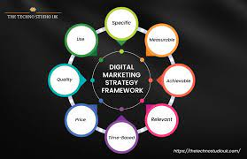

Cours que nous proposons
Diplôme B.Tech en informatique, diplôme B.Sc en génie mécanique et bien plus encore.
Design thinking
Writing well designed, testable, efficient code by using best software development practices. Creating website layout/user interfaces by using standard HTML/CSS practices.
Disruptive Strategy

Writing well designed, testable, efficient code by using best software development practices. Creating website layout/user interfaces by using standard HTML/CSS practices.
learning with finance
Writing well designed, testable, efficient code by using best software development practices. Creating website layout/user interfaces by using standard HTML/CSS practices.
Financial Accounting
Writing well designed, testable, efficient code by using best software development practices. Creating website layout/user interfaces by using standard HTML/CSS practices.
Business and Climate Change
Writing well designed, testable, efficient code by using best software development practices. Creating website layout/user interfaces by using standard HTML/CSS practices.
Digital Marketing Strategy
Writing well designed, testable, efficient code by using best software development practices. Creating website layout/user interfaces by using standard HTML/CSS practices.
Negotiation Mastery
Writing well designed, testable, efficient code by using best software development practices. Creating website layout/user interfaces by using standard HTML/CSS practices.
Launching Tech Ventures
Writing well designed, testable, efficient code by using best software development practices. Creating website layout/user interfaces by using standard HTML/CSS practices.
Global Business
Writing well designed, testable, efficient code by using best software development practices. Creating website layout/user interfaces by using standard HTML/CSS practices.